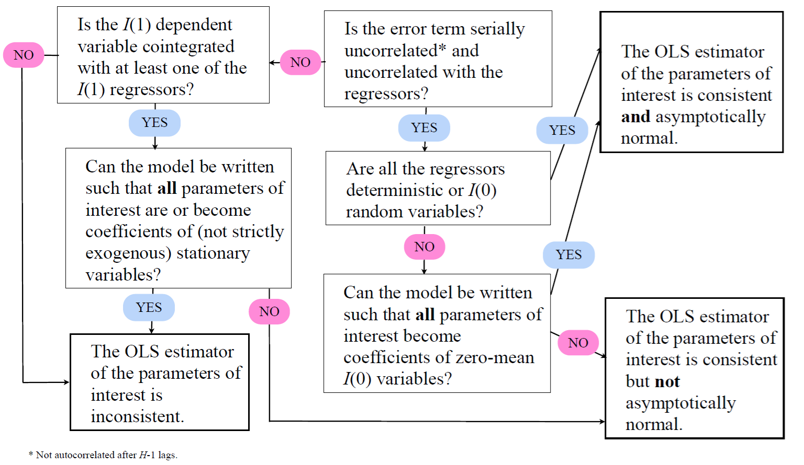

13 Predictive regressions with time series variables
In this section, we focus on predicting (univariate) \(y_{t+h}\) at the time \(t\) (forecast origin) given the collection of \(K\) predictive variables in \(\boldsymbol{x}_t = (x_{1t},\ldots,x_{Kt})\), which may also contain some lagged values of \(y_t\). The general predictive regression model is given by: \[\begin{equation*} y_{t+h} = \boldsymbol{x}^{\prime}_t \boldsymbol{\beta} + u_{t+h} = \sum_{i=1}^{K} x_{it} \beta_i + u_{t+h}, \quad t=1,\ldots, T-h. \end{equation*}\] where the forecast horizon \(h\) is given and fixed, \(\boldsymbol{\beta}\) is the vector of parameters and \(u_{t+h}\) is the error term with typical assumptions (such as an \(\mathsf{iid}\) error term).
Notice that in this section \(K\) is the number of predictive variables to predict univariate time series \(y_t\). This holds also for the introductory machine learning section (next subsection).
In other words, we do not consider VAR-type of cases in this section.
Standard assumption: Stationarity. Unless otherwise specified, in the general predictive regression framework, we assume that the variables included in \(\boldsymbol{x}_t\) and the dependent variable \(y_t\) are stationary.
The variables can be (relatively) strongly persistent (i.e., even relatively strong serial correlation), but they are assumed not to be integrated processes (i.e., not \(I(1)\) processes).
Under these conditions, standard asymptotic theory generally applies.
We consider two major deviations from this standard framework below
Section 13.1 considers the usual low-dimensional case where some variables are integrated (\(I(1)\)).
Section 13.2 considers the case of “Big Dependent Data” where the number of predictors \(K\) is large, but the dependent variable is still univariate.
13.1 Linear regressions containing I(1) variables
Consider the linear regression \[\begin{equation*} y_t= \boldsymbol{x}^{\prime}_t \boldsymbol{\beta} + u_t, \end{equation*}\] and the two assumptions \(\mathrm{(i)}\)–\(\mathrm{(ii)}\):
- \(\mathrm{(i)}\) The error term \(u_t\) is serially uncorrelated and uncorrelated with the regressors included in \(\boldsymbol{x}_t\).
- \(\mathrm{(ii)}\) All the regressors in \(\boldsymbol{x}_t\) are either deterministic or stationary random variables.
Assume now that only \(\mathrm{(i)}\) holds, that is the error term \(u_t\) is serially uncorrelated and uncorrelated with the regressors included in \(\boldsymbol{x}_t\).
- Even if the model cannot be written in this way, the OLS estimator of the coefficients of the \(I(1)\) regressors \(\boldsymbol{x}_t\) is consistent. However, its asymptotic distribution is, in general, nonstandard such that usual inference does not apply.
- If the model can be written such that all the parameters of interest are coefficients of mean zero stationary variables, their OLS estimator is consistent and asymptotically normal.
To examine these points in more detail, let us consider again the following relatively simple regression model \[\begin{equation*} y_t= \beta_0 + \beta_1 x_{t-1} + \beta_2 x_{t-2} + u_t, \end{equation*}\] where \(x_t \thicksim I(1)\). The model can be rewritten as \[\begin{equation*} y_t= \beta_0 + (\beta_1+\beta_2) x_{t-1} - \beta_2 (x_{t-1} - x_{t-2}) + u_t, \end{equation*}\] or \[\begin{equation*} y_t= \beta_0 + \beta_1 (x_{t-1}-x_{t-2}) + (\beta_1 + \beta_2) x_{t-2} + u_t. \end{equation*}\] As \((x_{t-1} - x_{t-2}) \thicksim I(0)\), and hence, standard inference on \(\beta_2\) (or \(\beta_1\)) holds. Therefore, both \(\beta_1\) and \(\beta_2\) cannot simultaneously be written as coefficients of \(I(0)\) variables (unless higher lags are included in the model).
- The OLS estimator of \(\beta_1\) and \(\beta_2\) is not, in general, jointly asymptotically normal.
- The test statistic on a hypothesis concerning both coefficients (for instance \(H_0: \beta_1 = \beta_2\)), in general, does not have the usual asymptotic \(\chi^2\)-distribution.
Let us continue with the above linear regression where now also the assumption \(\mathrm{(i)}\) does not hold and the dependent variable is \(I(1)\).
If the dependent variable is not cointegrated with any of the regressors, the OLS estimator of the coefficients of the \(I(1)\) regressors is inconsistent.
If the dependent variable is cointegrated with at least one of the regressors, the OLS estimator of the parameters of interest
- that can be written as coefficients of stationary variables, is inconsistent.
- that cannot be written as coefficients of stationary variables, is consistent, but not asymptotically normal.
For instance, consider the following regression model: \[\begin{equation*} y_t = \beta_0 + \beta_1 x_{1t} + \beta_2 x_{2t} + u_t, \end{equation*}\] where all variables are \(I(1)\), and \(y_t\) and \(x_{2t}\) are cointegrated and assumption \(\mathrm{(i)}\) does not hold.
- If \(x_{1t}\) and \(x_{2t}\) are cointegrated such that \((x_{1t} - \gamma x_{2t}) \thicksim ~ I(0)\), the model can be written as \[\begin{equation*} y_t = \beta_0 + \beta_1 (x_{1t} - \gamma x_{2t}) + (\beta_1 \gamma + \beta_2) x_{2t} + u_t, \end{equation*}\] and the OLS estimator of \(\beta_1\) is inconsistent.
- If \(x_{1t}\) is not cointegrated with \(x_{2t}\), \(\beta_1\) cannot be written as a coefficient of an \(I(0)\) variable, and hence, its OLS estimator is consistent, but not asymptotically normal.
The complete cheat sheet on linear regression with \(I(0)\) and \(I(1)\) variables is summarized hereby:
A spurious regression emerges when a statistically significant relationship between two \(I(1)\) variables \(y_t\) and \(x_t\) is found although those are completely unrelated. Assume that a researcher estimates a linear regression \[\begin{equation*} y_t = \beta_0 + \beta_1 x_t + u_t, \end{equation*}\] but assuming wrongly that the variables \(y_t\) and \(x_t\) are stationary. Instead, they are generated by two independent random walks (i.e., \(y_t\) and \(x_t\) are \(I(1)\) variables) \[\begin{eqnarray*} y_t &=& y_{t-1} + u_{1t}, \quad u_{1t} \thicksim \mathsf{iid}(0, \sigma^2_1), \\ x_t &=& x_{t-1} + u_{2t}, \quad u_{2t} \thicksim \mathsf{iid}(0, \sigma^2_2). \end{eqnarray*}\] This typically leads to the estimation result of the above linear regression characterized by a fairly high \(R^2\) (the coefficient of determination), highly autocorrelated residuals \(\widehat{u}_t\) and a (highly) statistically significant estimate of \(\beta_1\). This result is clearly spurious given that the variables are completely independent!
- Estimation results like this should not be taken seriously.
- The reason is that with \(y_t\) and \(x_t\) being \(I(1)\) variables, the error term \(u_t\) will also be \(I(1)\), not stationary (\(I(0)\)).
Solution to this problem is to include the lags of \(y_t\) and \(x_t\) as predictors in the model. In other words, we end up a model \[\begin{equation*} y_t = \beta_0 + \beta_1 x_t + \beta_2 y_{t-1} + \beta_3 x_{t-1} + u_t. \end{equation*}\] In this case the OLS estimator is consistent. Thus, in general, including lagged values in the regression is sufficient to solve many of the problems associated with possibly spurious regressions.
13.2 Forecasting with big dependent data
In this section, let us focus on predicting (univariate) \(y_{t+h}\) at time \(t\) (forecast origin) given the collection of \(K\) predictive variables in \(\boldsymbol{x}_t = (x_{1t},\ldots,x_{Kt})\), which may also contain some lagged values of \(y_t\) (as discussed above).
- This section strongly follows (notation and presentation) Chapter 7 of Peña and Tsay (2021).
In this section, we allow the possibility that the vector \(\boldsymbol{x}_t\) can be high-dimensional, that is we have a large set of potential predictive variables. This means deviations from the traditional econometric methods as we focus on possibly big dependent data emphasizing the case where \(K\), the number of predictors, is large, even larger than the sample length \(T\).
In this type of data-rich environment, several interesting insights have been developed in recent times.
In this course, we concentrate only on a brief introduction to regularized estimators, specifically ridge, lasso and elastic net, for such predictive regressions where the predictor space can be (very) large.
It is important to note that most modern statistical and machine learning methods introduced in this section were developed for independent (cross-sectional) data. Consequently, they may not be directly or fully applicable to time series without appropriate handling, even though they are frequently used in this manner.
This research area, focusing on “big dependent data,” is still very much evolving.
We will discuss the justifications for and modifications to these methods for time series applications where relevant.
In short, overlooking serial dependence and high multicollinearity can lead to erroneous inferences. For data with short-range dependence, where serial correlation decays quickly (e.g., exponentially) and the series is not highly persistent, tools designed for independent data can often be used with minimal adjustment. However, in the presence of strong serial dependence (highly persistent time series), more significant complications should be expected
We concentrate on the regularized estimation of the following predictive regression model introduced at the beginning of this chapter: \[\begin{equation*} y_{t+h} = \boldsymbol{x}^{\prime}_t \boldsymbol{\beta} + e_{t+h} = \sum_{i=1}^{K} x_{it} \beta_i + e_{t+h}, \quad t=1,\ldots, T-h, \end{equation*}\] with a given and fixed forecast horizon \(h\), \(\boldsymbol{\beta}\) is the vector of parameters and \(e_t\) is the error term with typical assumptions (such as white noise or iid error term)).
- For simplicity, and importantly, in notation it is understood that \(\boldsymbol{x}_t\) may contain the constant term. In the forthcoming shrinkage-based estimators the handling of constant is somewhat different than in the conventional models.
- In these regularized estimations and their applications (that is, in this section), each predictor \(x_{it}\) is mean-adjusted and standardized to have unit variance. This assumption is quite natural for independent data, but for time series may encounter some additional difficulties.
The above predictive regression can be rewritten using vectors and matrices as \[\begin{equation*} \boldsymbol{Y} = \boldsymbol{X} \boldsymbol{\beta} + \boldsymbol{E}, \end{equation*}\] where the vectors \(\boldsymbol{Y}\) and \(\boldsymbol{E}\) and the matrix \(\boldsymbol{X}\) have suitable dimensions \[\begin{equation*} \boldsymbol{Y} = \begin{bmatrix} y_{1+h} \\ y_{2+h} \\ \vdots \\ y_{T} \end{bmatrix} \quad (T-h \times 1), \qquad \boldsymbol{X} = \begin{bmatrix} \boldsymbol{x}^{\prime}_1 \\ \boldsymbol{x}^{\prime}_2 \\ \vdots \\ \boldsymbol{x}^{\prime}_{T-h} \end{bmatrix} \quad (T-h \times K) \quad \mathrm{and} \quad \boldsymbol{E} = \begin{bmatrix} e_{1+h} \\ e_{2+h} \\ \vdots \\ e_{T} \end{bmatrix} \quad (T-h \times 1). \end{equation*}\] As discussed above, under traditional linear regression analysis, ordinary least squares (OLS) can be used to estimate the parameters when \(K\) is sufficiently (much) smaller than the number of observations \(T\): \[\begin{equation*} \widehat{\boldsymbol{\beta}}_{OLS} = \Big(\sum_{t=1}^{T-h} \boldsymbol{x}_t \boldsymbol{x}^{\prime}_t \Big)^{-1} \sum_{t=1}^{T-h} \boldsymbol{x}_t y_{t+h}. \end{equation*}\]
- The sum may also run from 1 to \(T\) if the necessary \(h\) initial values with negative time indices are available
However, if \(K \ge T-h\), then the OLS estimator is not unique and will overfit the data. This emphasizes the need for regularization and shrinkage-based estimators.
One possible approach and algorithm to obtain a regularized estimator is to build upon lasso estimator \[\begin{equation*} \widehat{\boldsymbol{\beta}}_L(\lambda) = \mathrm{arg}\,\underset{\boldsymbol{\beta}}{\mathrm{min}} \Bigg(\frac{||\boldsymbol{Y}-\boldsymbol{X} \boldsymbol{\beta}||^2_2}{T-h} + \lambda ||\boldsymbol{\beta}||_1\Bigg), \end{equation*}\] where \(||\boldsymbol{Y}-\boldsymbol{X} \boldsymbol{\beta}||^2_2 = \sum_{t=1}^{T-h} (y_{t+h} - \boldsymbol{x}^{\prime}_t \boldsymbol{\beta})^2\) and \(||\boldsymbol{\beta}||_1 = \sum_{i=1}^{K} |\beta_i|\).
Here \(|| \boldsymbol{z} ||_2\) refers to Euclidean norm \(\mathcal{l}_2\), that is for the general vector \(\boldsymbol{z}=(z_1,\ldots,z_K)\) is \(||\boldsymbol{z}||_2 = \sqrt{\sum_{i=1}^K z^2_i}\). Furthermore, \(\mathcal{l}_1\)-norm is defined as \(||\boldsymbol{z}||_1 = \sum_{i=1}^K |z_i|\).
Note that, for convenience, in the Lasso estimator (in general in lasso literature) the predictors are often standardized so that \(\sum_{t=1}^{T-h} x_{it}\) = 0 and \(\sum_{t=1}^{T-h} x^2_{it}=1\) for \(i=1,\ldots,K\). The dependent variable is mean-adjusted, i.e. \(\frac{1}{T-h} \sum_{t=1}^{T-h} y_{t+h} = 0\).
Lasso uses \(\mathcal{l}_1\)-penalty (i.e. absolute values of the coefficients).
It can be shown that this enables variable selection. That is, some resulting estimates \(\widehat{\beta}_i\) will be exactly zero and hence excluded from the final model.
The fact that only a few coefficients \(\beta_i\) are nonzero implies the sparsity of the resulting model (model is sparse in the sense that some predictors are excluded).
An alternative regularization-based estimator is the well-known ridge estimator (ridge regression). Ridge estimator is obtained when \(\mathcal{l}_2\)-penalty is used \[\begin{equation*} \widehat{\boldsymbol{\beta}}_R(\lambda) = \mathrm{arg}\,\underset{\boldsymbol{\beta}}{\mathrm{min}} \Bigg(\frac{||\boldsymbol{Y}-\boldsymbol{X} \boldsymbol{\beta}||^2_2}{T-h} + \lambda ||\boldsymbol{\beta}||^2_2\Bigg). \end{equation*}\] In other words, the difference to the lasso estimator is the penalty term. The use of \(\mathcal{l}_2\)-penalty means that the ridge estimator provides resulting estimates which are dense that is there won’t be exactly zero estimates in the same way as with lasso estimator.
An important part of using regularized estimators is the determination of the value of the penalty term via parameter \(\lambda\). A small penalty might result in overfitting, whereas a large penalty would lead stronger shrinkage in coefficients \(\beta_i\) towards 0.
An ultimate case is of course \(\lambda=\infty\), which would yield (or closeby in the ridge estimator) \(\beta_i=0\) for all \(i\).
In contrast, if \(\lambda=0\) implies no penalty at all, which may result in severe multicollinearity problems as the resulting ordinary least squares estimator is not necessarily even applicable in such circumstances.
An interesting case is also obtained when \(\lambda\) is close to zero but nonzero. This leads so called overparametrized models.
For independent (cross-sectional) data, cross-validation (CV) is typically used to determine the value of penalty parameter \(\lambda\).
For time series data, it is somewhat questionable to use CV due to its construction (observations are not independent as in cross-sectional datasets) as seen below.
Despite this it seems that CV is also quite often used for time series and research in this respect is still ongoing.
One and typical implementation of CV, as introduced in Peña and Tsay (2021, Chapter 7.1), is the following.
Divide the dataset \(S=\{(y_{t+h}, \boldsymbol{x}_t)|t=1,\ldots,T-h\}\) randomly into, say, 10 subsamples, say \(S_1,\ldots,S_{10}\).
Let \(S_{(i)}\) be all the data but the subsample \(S_i\). That is \(S_{(i)} = \cup_{j \neq i}^{10} S_j\) (i.e. the subsample \(S_i\) is excluded). Let \(\{\lambda_j|j=1,\ldots,m\}\) be the set of possible values of \(\lambda\) and let \(\mathrm{SSE}(\lambda_j)\) be the sum of squared prediction errors defined below for parameter \(\lambda_j\).
The CV procedure (as in Peña and Tsay (2021, Chapter 7.1) is carried out as follows:
- For each \(\lambda_j \quad (j=1,\ldots,m)\)
- Initialize \(\mathrm{SSE}(\lambda_j)=0\)
- For \(i=1,\ldots,10\)
- Fit the Lasso, or Ridge, model with penalty \(\lambda_j\) using data \(S_{(i)}\)
- Predict the response using the fitted parameters and the predictors in \(S_i\)
- Compute the prediction errors for the subsample \(S_i\)
- Update \(\mathrm{SSE}(\lambda_j)\) by adding the sum of squared prediction errors of subsample \(S_i\).
- Select \(\lambda\) by \(\lambda = \mathrm{arg}\, \underset{\lambda_j}{\mathrm{min}} \, \mathrm{SSE} (\lambda_j)\)
This type of 10-fold CV procedure is commonly used in most software packages. However, as already discussed, the validity of such CV is questionable when the data are serially dependent. The above random division to subsamples does not respect serial correlation between observations and can invalidate results for time series data.
- Following, e.g., Peña and Tsay (2021), one alternative approach to CV is to select \(\lambda\) using some information criteria such as BIC or AIC.
Finally, the use of a combination of the \(\mathcal{l}_1\) and \(\mathcal{l}_2\) penalties leads to elastic net (EN) estimator \[\begin{equation*} \widehat{\boldsymbol{\beta}}_{EL}(\alpha, \lambda_1, \lambda_2) = \mathrm{arg}\,\underset{\boldsymbol{\beta}}{\mathrm{min}} \Bigg(\frac{||\boldsymbol{Y}-\boldsymbol{X} \boldsymbol{\beta}||^2_2}{T-h} + \lambda_1 \alpha ||\boldsymbol{\beta}||_1 + \lambda_2 (1-\alpha) ||\boldsymbol{\beta}||^2_2\Bigg), \end{equation*}\] where \(0 \le \alpha \le 1\). The elastic net estimator reduces to the lasso estimator when \(\alpha=1\) and to the ridge estimator if \(\alpha=0\). In this formulation of the elastic net, two penalties \(\lambda_1\) and \(\lambda_2\) are used, resulting in the need to select two tuning parameters. If we do not prespecify \(\alpha\), one possible way forward is to consider a few possible values of \(\alpha\) and compare their predictive performance.